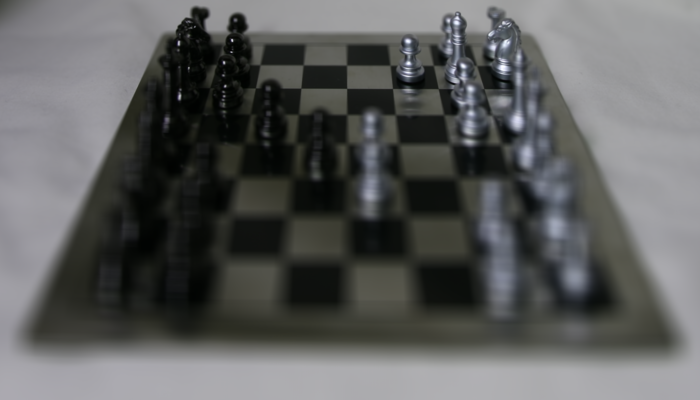
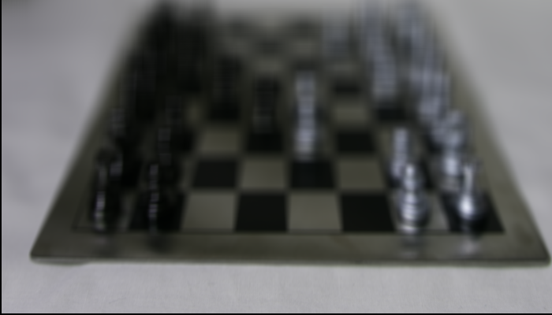
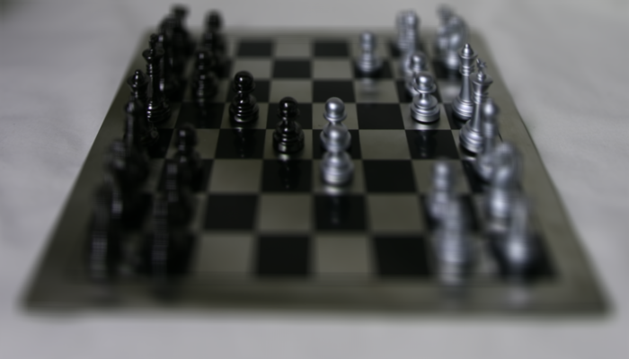
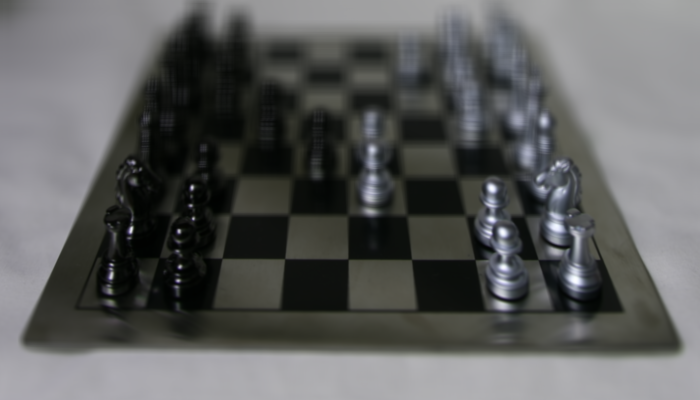
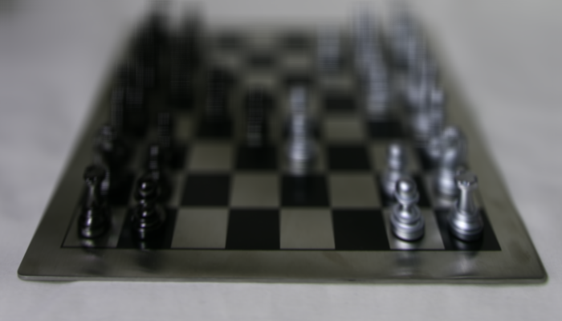
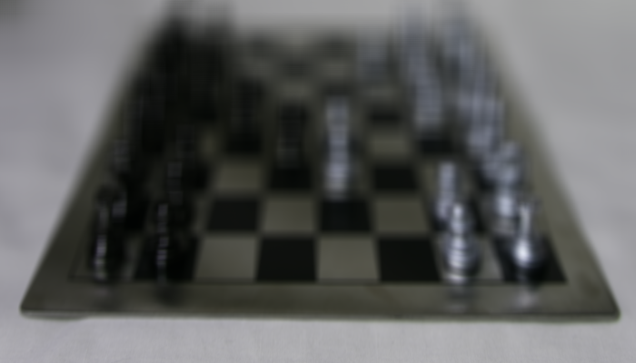

IIT6028 HA#5 Computational Photography
LIGHT FIELD RENDERING, FOCAL STACKS AND DEPTH FROM DEFOCUS
1. Initials
Load the light field image, and create from it a 5-dimensional array L.
First, I load the given light field image and set variables from it.
I set them for global variable, to use it in combine_depth function.
img_raw = imread('data/chessboard_lightfield.png');
global u v s t c
u = 16;
v = 16;
s = size(img_raw, 1) / u;
t = size(img_raw, 2) / v;
c = 3;
Then I made img_array, which means L in given guide.
img_array = zeros(u, v, s, t, c);
img_array = uint8(img_array);
for i = 1:s
for j = 1:t
for x = 1:u
for y = 1:v
for z = 1:c
img_array(x, y, i, j, z) = img_raw(u*(i-1)+x, v*(j-1)+y, z);
end
end
end
end
end
It tooks 20 sec in my desktop. I think it takes quite long time because of global.
2. Sub-aperture views
Rearranging the pixels in the light field image.
I created img_mosaic, it is 2D mosaic which was created from sub-aperture views.
img_mosaic = zeros(u*s, v*t, c);
img_mosaic = uint8(img_mosaic);
for x = 1:u
for y = 1:v
img_mosaic(s*(x-1)+1: s*(x-1)+s, t*(y-1)+1: t*(y-1)+t, :) = img_array(x, y, :, :, :);
end
end
imwrite(img_mosaic, 'results/img_mosaic.png');
Following image is the results of this parts.
It's size is too big(6400x11200x3), so I reduced it to show on website more well.

(above) img_mosaic
3. Refocusing and focal-stack generation
A different effect achieved by appropriately combining parts of the light field is refocusing at different depths.
I created combine_depth function to get img_combined by given depth.
function [img_combined] = combine_depth(img_array, d_)
global u v s t c
img_array = double(img_array);
img_combined = zeros(s, t, c);
for i = 1:s
for j = 1:t
count = 0;
for x = 1-u/2:u/2
i_ = i + round(x*d_);
for y = 1-v/2:v/2
j_ = j - round(y*d_);
if i_ <= s && i_ >= 1 && j_ <= t && j_ >= 1
for z =1:c
img_combined(i, j, z) = img_combined(i, j, z) + img_array(x+u/2, y+v/2, i_, j_, z);
end
count = count + 1;
end
end
end
img_combined(i, j, :) = img_combined(i, j, :) / count;
end
end
img_combined = uint8(img_combined);
end
To calculate average of img_array, I set count to divide sum of them.
I added round(x*d_) value on i, but subtracted it on j.
And first, I set x and y value to 1:u/v.
Then we can check refocusing is applied correctly, but there are some moving of whole image.
 (above) [1 2] 1: depth=0 / 2: depth=2
We can fix it by setting x and y value to 1-u/2:u/2.
Following images are fixed results of refocusing.
(above) [1 2] 1: depth=0 / 2: depth=0.4
(above) [1 2] 1: depth=0.8 / 2: depth=1.2
 (above) [1 2] 1: depth=1.6 / 2: depth=2
We can check refocusing is successfully applied.
4. All-focus image and depth from defocus
Merge the images into a new images where all of the scene is in focus.
I calculated focal_stack for each luminance, low, high, and sharpness.
I used rgb2xyz and imguassfilt to implement given tasks.
In xyz color space, Y value means luminance, so I took second channel of array.
focal_stack = double(focal_stack);
focal_stack_lum = zeros(s, t, d);
focal_stack_low = zeros(s, t, d);
focal_stack_high = zeros(s, t, d);
focal_stack_sharp = zeros(s, t, d);
stdev_1 = 5;
stdev_2 = 5;
for d_ = 1:d
img_combined = focal_stack(:, :, :, d_);
% luminance
img_combined_xyz = rgb2xyz(img_combined, 'ColorSpace', 'srgb');
img_combined_lum = img_combined_xyz(:, :, 2);
focal_stack_lum(:,:,d_) = img_combined_lum;
% low
img_combined_low = imgaussfilt(img_combined_lum, stdev_1);
focal_stack_low(:,:,d_) = img_combined_low;
% high
img_combined_high = img_combined_lum - img_combined_low;
focal_stack_high(:,:,d_) = img_combined_high;
% sharpness
img_combined_sharp = imgaussfilt(img_combined_high .^ 2, stdev_2);
focal_stack_sharp(:,:,d_) = img_combined_sharp;
end
Then calculate img_all_focus and img_depth_map using following codes.
img_all_focus = zeros(s, t, c);
img_depth_map = zeros(s, t);
for i = 1:s
for j = 1:t
fprintf('%d %d', i, j);
sum_sharp = 0;
for d_ = 1:d
img_combined = focal_stack(:, :, :, d_);
img_combined_sharp = focal_stack_sharp(:,:,d_);
img_all_focus(i, j, :) = img_all_focus(i, j, :) + img_combined(i, j, :) * img_combined_sharp(i, j);
img_depth_map(i, j) = img_depth_map(i, j) + img_combined_sharp(i, j) * 0.1*(d_-1);
sum_sharp = sum_sharp + img_combined_sharp(i, j);
end
img_all_focus(i, j, :) = img_all_focus(i, j, :) / sum_sharp;
img_depth_map(i, j) = img_depth_map(i, j) / sum_sharp;
end
end
And following images are the results of this parts.
I set list of depth as 0:0.6:2.
(above) [1 2] 1: img_all_focus / 2: img_depth_map
You can check img_depth_map image looks little strange, it's because I set it with uint8.
But I didn't have enough time to fix it. :/
You can check full matlab codes in GitHub Repo.
Copyright 2018. PJunhyuk. All rights reserved.